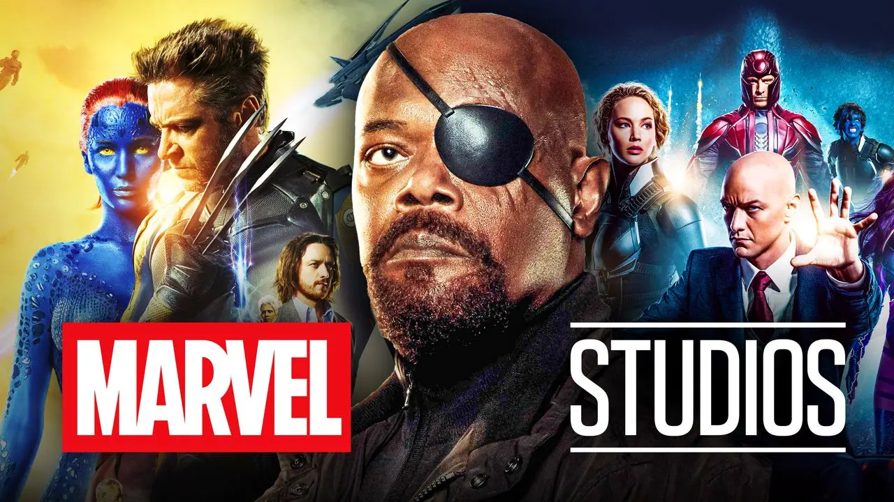

Les changements majeurs dans Marvel Studios : Le studio prend un virage stratégique pour 2026. Une nouvelle ère commence.
Moins de projets, mais plus de qualité ?
Marvel Studios préfère prendre son temps pour mieux développer ses projets. Le mot d'ordre : qualité avant tout.
"Nous avons appris de nos erreurs et nous allons ralentir le rythme pour offrir des expériences plus immersives et mieux écrites." – Kevin Feige.
Films et séries reportés
- Avengers: The Kang Dynasty – Prévu pour 2026.
- Avengers: Secret Wars – Attendu pour 2027.
- Blade – Nouveau casting en 2025-2026.
Des annulations en cascade
- Armor Wars : Annulé.
- Nova : Spin-off abandonné.
- Wonder Man : Série prévue pour Disney+ qui s'est mis en pause plus d'une dizaine de fois, mais qui a l'air d'arriver en 2026
- La série sur Wakanda : Mise en pause indéfinie.
Retour aux héros emblématiques
Marvel retourne aux racines, avec des projets centrés sur ses personnages phares.
"Le retour de Punisher sera une lettre d’amour aux fans" – Un producteur Marvel.
Les projets à venir :
- Friendly Neighborhood Spider-Man : Série animée. 4 saisons annoncées avec une nouvelle saison chaque année à partir de 2026.
- Deadpool (Ryan Reynolds) et les X-Men : Personnages clés pour l’avenir du MCU.
- Punisher : Spécial confirmé, avec le retour de Jon Bernthal.

Une nouvelle approche de la validation des projets
Marvel Studios change également son processus de validation des films. Désormais, le studio ne donne plus aussi facilement son feu vert aux nouveaux projets sans avoir un aperçu concret du scénario et de sa faisabilité. Cette approche vise à éviter les productions précipitées et à garantir une meilleure cohésion dans l’univers cinématographique.
Autre changement majeur : une plus grande implication des scénaristes de comics dans l’écriture des films. Marvel Studios souhaite s’appuyer davantage sur ceux qui connaissent le mieux les personnages et leurs arcs narratifs afin de proposer des histoires plus fidèles et inspirées des bandes dessinées.
"Nous voulons ramener l’authenticité des comics dans nos films. Les scénaristes qui ont façonné ces héros seront désormais plus impliqués dans leur passage au grand écran." – Kevin Feige.
L'impact des grèves sur Marvel Studios
Les récentes grèves des scénaristes et des acteurs à Hollywood ont retardé de nombreux projets. Les grèves ont provoqué des blocages dans l’écriture et la production de films et séries. Les conséquences sont nombreuses, avec des dates de sorties déplacées et des budgets réévalués. Ces grèves ont conduit Marvel Studios à réexaminer sa manière de travailler, favorisant désormais un processus plus respectueux des créatifs et plus réfléchi.
"Ces grèves nous ont donné une opportunité de repenser notre façon de travailler. Nous devons être plus respectueux envers nos créatifs et offrir de meilleures conditions pour que chacun puisse donner le meilleur de lui-même." – Kevin Feige.
Un récapitulatif de Marvel Studios depuis 2020
Depuis 2020, Marvel Studios a traversé plusieurs phases cruciales. Après l’énorme succès de la phase 3, la phase 4 a été marquée par des tentatives d’introduire de nouveaux personnages et de nouvelles dynamiques dans l'univers. Cependant, cette phase a été parfois critiquée pour son manque de direction. La phase 5 a tenté de rectifier le tir, mais avec un certain manque de cohérence et des films qui n'ont pas convaincu tous les fans.
La décision de ralentir le nombre de sorties et de se concentrer sur des productions de meilleure qualité semble une tentative pour retrouver le succès d’antan.
Le tournant vers les mutants et la fin du multivers
Marvel Studios prépare activement la nouvelle saga du MCU en se concentrant sur l’introduction des mutants. Alors que l’arc du multivers semble toucher à sa fin, le studio veut rapidement clore cette phase et entamer un nouveau chapitre autour des X-Men et des héros mutants. Cela marque un virage stratégique, avec l'introduction de l'adamantium dans *Captain America: Brave New World*, un clin d’œil aux futurs développements de la saga des mutants et de Wolverine.
Conclusion : Une nouvelle ère pour Marvel Studios
Alors que Marvel Studios traverse une période de transition, il semble déterminé à repartir sur de nouvelles bases. En ralentissant le rythme de production et en se concentrant sur des projets de qualité, le studio cherche à offrir une expérience plus cohérente et immersive aux fans. L'introduction imminente des mutants et la fin du multivers marquent le début d'une nouvelle phase excitante du MCU. Avec un retour aux héros emblématiques et une approche plus respectueuse du processus créatif, Marvel semble prêt à relever les défis de demain et à reconquérir le cœur des spectateurs.
Restez à l'affût des prochaines annonces, car l'avenir du MCU s'écrit maintenant, avec des personnages mythiques et des intrigues qui s'annoncent déjà mémorables.